Write down the address and the password, then tap Finish.
The setup: step 1
1NetworksTap your network, then type its password.
2ScanScans for the networks again.
3HiddenFor a hidden network: type its name and its password.
4NextGoes to the summary when the deck is connected.
The setup: step 2
1AddressThe address of the deck. Open it in a browser.
2PasswordThe password of the web pages. Machine > Wi-Fi and help shows it again.
3FinishCloses the setup. The setup shows only at the first start.
To set the Wi-Fi before the first start, put the SD card in a computer. Fill in printdeck.txt on the PRINTDECK partition.
02Choose your printer
A new Printdeck has no printer config, so it shows the printer setup.
Connect the printer to the Printdeck with a USB cable, and switch the printer on.
Wait until the deck finds the board. If the board is missing, tap Search again.
Tap Choose printer. The printers of the brand of your board are at the top.
Tap your printer, then Use. Klipper restarts with its config.
No printer yet
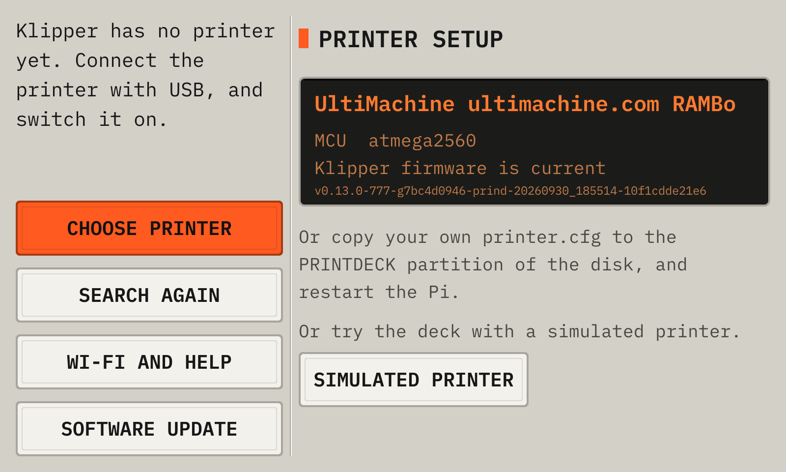
1BoardThe board on USB and its firmware.
2Choose printerOpens the list of Klipper example configs.
3Search againLooks for the board again.
4Simulated printerRuns a simulated printer, with no real printer.
5Your own configOr copy your printer.cfg to the PRINTDECK partition, and restart.
6Wi-Fi and helpThe network, the address and the password.
7Software updateInstalls a new version. It can fix the problem.
Choose your printer
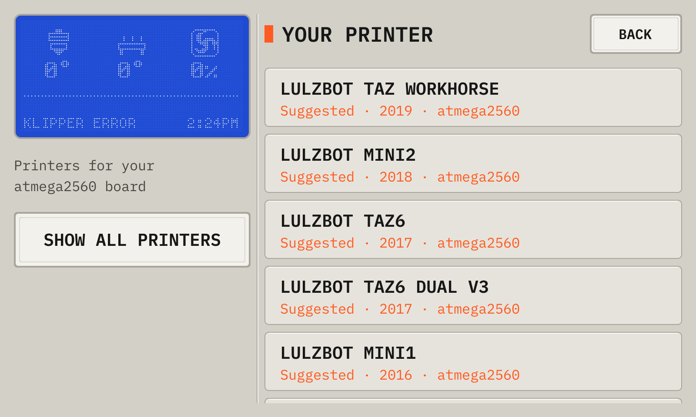
1ChipThe printers with the chip of your board.
2PrinterTap your printer. The deck writes printer.cfg and restarts Klipper. The old file stays as printer.cfg.bak.
3Show all printersShows the printers for all chips.
03Install the Klipper firmware
The printer board must run the Klipper firmware of this Printdeck.
Open Machine, then Maintenance, then tap Firmware. A new board shows Install Klipper firmware on the setup screen.
Tap Write. Keep the printer on until the deck shows the result.
Tap OK. Klipper restarts and connects to the board.
The firmware flash
1StepStarting the bootloader, Writing, then Checking.
2ProgressThe part of the firmware that is done.
The deck stops Klipper, writes the firmware, checks it, and starts Klipper again. Printdeck flashes atmega2560 boards with an STK500v2 bootloader, for example RAMBo and RAMPS.
04The deck
The deck shows the idle screen when no print runs. A key with an LED is on while its LED is lit. A key with no LED does an action.
The printer display and the key panel are at the left. The open page is at the right, with Back at the top and its actions at the bottom.
The idle screen
1NozzleThe nozzle temperature and its target. Tap it to set the temperature.
2BedThe same for the bed.
3FanThe part cooling fan. Its blades turn at its speed.
4StatusThe head position, the printer state, the loaded filament and the clock.
5Print a fileOpens the files. See Files.
6Home all, X, Y, ZHomes all axes, or one axis. A lit LED shows a homed axis.
7Last printThe last print and its cost. Reprint starts it again. Preheat and Cool down are on the Filament page.
8ModelTap it to open the print in the history.
9PagesThe lit LED shows the open page.
05The display of the printer
The deck draws the printer display. The display shows the same status as the deck.
Turn or click the knob to open the menu. The menu has the same pages and keys as the touch screen. A click taps the key. The top item goes back, and a long click also goes back. After 20 seconds with no turn, the display shows the status screen again.
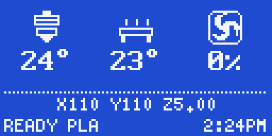
The status screen
During a print
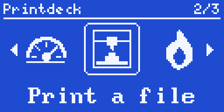
The home menu: turn the knob to choose
A page: Maintenance
An action runs
06The deck in a browser
Open http://printdeck.local in a browser on the same network. Log in with the password of the deck. The browser shows the screens of the touch screen. Each browser has its own screens.
On a phone, tap Add to Home Screen. The deck then opens as an app.
The page http://printdeck.local/system shows the version, the logs and the API key for slicers. It also installs an update file, and makes a backup. See Back up your data.
07Send a file from the slicer
The deck uses the OctoPrint API, so slicers can send files and start prints.
Cura: add the deck with the OctoPrint Connection plugin. The deck asks "Allow Cura to use the Printdeck?". Tap Allow.
OrcaSlicer or PrusaSlicer: add a printer of the type OctoPrint, with the address http://printdeck.local and the API key of the system page.
The webcam is the camera with the use Apps: http://printdeck.local/webcam/stream and /webcam/snapshot, with the API key. Add camera=2 for the second camera, w=320 for smaller pictures, or fps=2 for fewer frames. With no camera, the webcam shows the deck screen.
08Start a print
The newest file is at the top. Each file shows the print time, the filament and the layer height from the slicer. Cura, PrusaSlicer, OrcaSlicer and Bambu Studio write this data.
Tap Print a file on the idle screen.
Tap the file. Check the print time, the filament and the temperatures.
Tap Print, then Print again.
The file list
1CountThe number of files.
2PictureThe thumbnail.
3FileThe name and the slicer data.
4DateWhen the file arrived.
5On the deck, SD cardThe files on the deck, or on the SD card of the printer display ([printdeck_sdcard]).
Tap a file to open it.
A file
1PictureThe thumbnail.
2Slicer dataThe data from the slicer.
3PrintStarts the print.
4DeleteRemoves the file.
The SD card of the printer
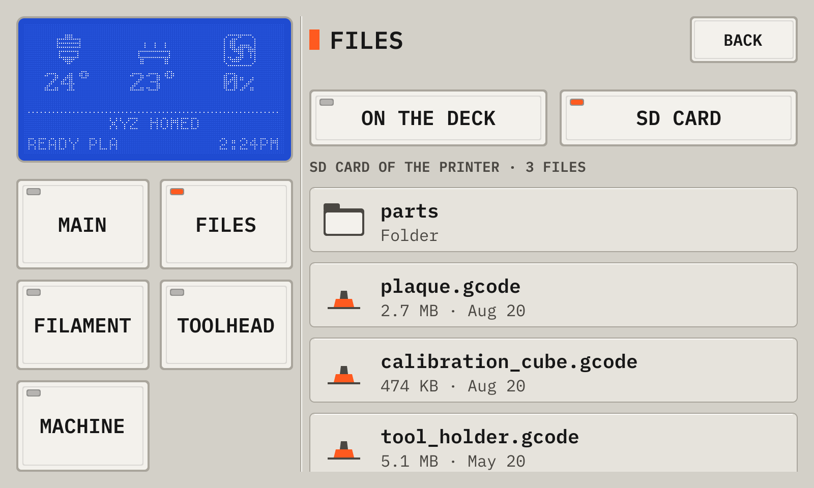
1On the deck, SD cardThe files on the card, or on the deck.
2CountThe open folder.
3FolderTap a folder to open it.
4FileTap a file to copy it to the deck.
Stop ends the copy.
09Watch the print
The deck shows a screen for each phase of the print.
Watch the first layer. Use − and + to set the nozzle height.
Tap Save to keep the Z offset for the next prints.
Use Tune to change the speed, the flow or the fan.
When the print is done, wait for the bed to cool. Then remove the part.
Preparing
1DisplayThe printer display. Tap the nozzle or the bed to set its temperature.
2StepsThe steps of the start macro. The step that runs has a lit LED.
3HelpThe network, the address and the password.
4Cancel printStops the print.
The first layer
1DisplayThe printer display. Tap the nozzle or the bed to set its temperature.
2− and +A round, thin line needs − (closer). A flat, rough line needs + (farther).
3Z offsetThe nozzle height above its normal height.
4SaveKeeps the Z offset for the next prints.
5StepHow far one tap moves the nozzle, in mm.
6Pause, CancelPauses the print, or stops it after a question.
7HelpThe network, the address and the password.
8LayerThe first layer of the model.
Printing
1DisplayThe printer display. Tap the nozzle or the bed to set its temperature.
2PausePauses the print.
3TuneChanges the speed, the flow and the fan.
4CancelStops the print.
5LayerThe layer now and the head speed.
6RollThe roll in the printer and its filament.
7Layer timesA bar for each layer. Done layers are dark, the layer now is orange, and the next layers are light.
8ModelThe model up to the layer now.
9Layer sliderDrag it to see another layer. Live goes back to the layer that prints.
10PagesDuring a print, Main goes back to the print.
Tune
1HelpThe network, the address and the password.
2SpeedThe print speed, in percent of the slicer speed.
3FlowThe amount of plastic, in percent.
4Z offsetThe nozzle height above its normal height. Save keeps it.
5FanThe part cooling fan.
6DisplayTap the nozzle or the bed on the display to change its temperature.
Paused
1DisplayThe printer display. Tap the nozzle or the bed to set its temperature.
2WhereThe layer and the message.
3ResumeContinues the print.
4Change filamentFor a new color.
5Move headOpens Toolhead.
6TuneChanges the print.
7CancelStops the print.
A pause of the file
1WhereThe message of the file.
2Check the heightA paper test on the part.
3ResumePrimes the nozzle and continues.
The end of the print
1StepsThe steps of the end macro.
2ModelThe finished model.
Done
1ModelThe model of the print.
2ResultDone, Cancelled or Failed.
3BedThe time until the part comes off easily (35°).
4ReprintPrints the file again.
5Time lapsePlays the time lapse video of the print. It shows Saving… while the deck writes the video.
6DoneCloses this screen.
Time lapse shows only for a print with a time lapse.
10Print in two colors
The Colors tool of the Cura plugin gives a model a roll of another color. The print pauses at the first layer of that model.
In Cura, put the letters on the part. Select the letters, open the Colors tool, and tap their roll.
Print. At the first layer of the letters, the printer parks and the deck shows Change filament in orange.
Tap Change filament. Unload, load the roll of the letters, and tap Done.
Pull the ooze off the nozzle with tweezers, then tap Resume.
A color change
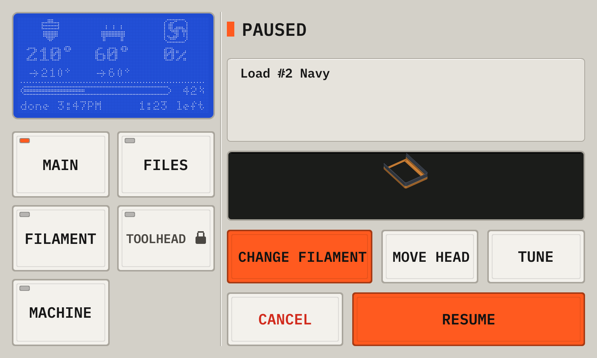
1WhereThe roll of the next color.
2Change filamentOpens the filament change with that roll.
3ResumePrimes the nozzle at the front of the bed, then continues.
11Look around during a print
During a print, the other screens are read only. The deck goes back to the print after 2 minutes with no touch.
During a print, Main is the print. The key panel opens the other pages.
Filament during a print
1RollThe roll in the printer and its filament.
2LastsThe filament left after the print. Red text shows a roll that runs out.
3Change filamentPauses the print and opens the filament change. Then tap Resume.
4PagesThe key panel opens each page.
12Make a time lapse
The deck camera captures a picture at each layer change. At the end of the print, the deck makes a video.
For each picture, the printer retracts, lifts the nozzle and moves the head to the left side. A bed that moves in Y goes to the middle of the part, so the bed is at the same place in each frame. On the TAZ Workhorse the nozzle goes to Z 10 mm or more, over the bed washers. Each picture adds a few seconds.
Aim the camera: Settings, then Camera.
Open Settings, then Time lapse.
Tap Time lapse to turn it on.
With two cameras, open Settings, then Cameras. Tap a camera, and check Time lapse or Pictures.
Tap First layer for a picture of the first layer, or a picture and a pause. At a pause, check the layer, then tap Resume.
Print. After the first layer, the deck shows its picture.
At the end of the print, tap Time lapse on the done screen. The video plays.
To see it later, open Machine, then Statistics, then History. Tap the print, then Play.
To download the video, open http://printdeck.local/system in a browser. The Time lapse part has the video. Click its name.
A print of the history
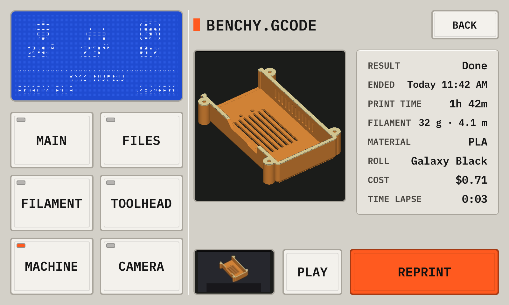
1ModelThe model of the print.
2DetailsThe result, the time, the filament and the time lapse video.
3StillThe last frame of the time lapse video.
4PlayOpens the player.
5ReprintPrints the file again.
The deck keeps the last 3 videos. The record of an older print shows Removed.
The time lapse player
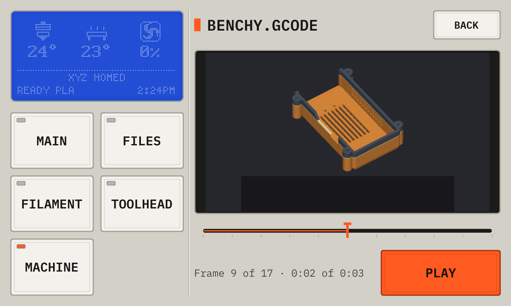
1VideoThe video, as large as it fits.
2PositionTap or drag to go to a frame.
3FramesThe frame, the count of frames, the time and the length.
4PlayPlays the video, or pauses it.
The video plays only while this page shows. Back returns to the page that opened it.
Cura, PrusaSlicer and OrcaSlicer write the layer comments that the time lapse needs.
Park for the frames is on by default. Off keeps the toolhead in the pictures, with no stops.
Crop to the part is on by default. With a calibration of the camera (Settings, Camera, Calibrate) and the park on, each frame shows the part and the space around it. With no calibration or no park, the frames show the whole picture.
The video is a .mov file. The deck keeps the last 3 videos. A backup excludes the videos.
13The iPhone and Apple Watch apps
The iPhone app shows the deck and controls the print. The watch app shows the print.
The apps use the local network. The watch connects on Wi-Fi, or through the iPhone.
Open Printdeck on the iPhone. It finds the deck on the network. Tap Connect.
Tap Allow on the deck.
For push messages, open Menu, then Notifications, and tap Pair for notifications. Allow the notifications.
To add the complication, edit the watch face and choose Printdeck.
To add a widget, touch and hold the Home Screen or the Lock Screen, tap Edit, and choose Printdeck.
iPhone app
The deck screen and its keys. With two cameras, tap a camera name on the camera page, or swipe, to switch. The watch shows the same camera. Time lapse lists the videos of the deck: tap a video to play it, share it, or save it to Photos.
Watch app
The progress and the time left. Tap for Pause, Resume or Cancel.
Complications
The progress on the watch face.
Home Screen widgets
The status of the print.
Lock Screen widgets
The same as the complications.
Live Activity
The print on the Lock Screen and in the Dynamic Island.
Notifications
Print done, print failed, paused, first layer done, and a roll that runs short.
The deck sends a push message when a print ends or pauses, after the first layer, and when a roll runs short. Settings, then Phones, lists the paired phones.
14Change the filament
Set the loaded filament here, so Preheat uses its temperatures. The deck keeps a list of your rolls. Each print subtracts its filament from the roll in the printer.
Open Filament, then tap Change filament.
Tap the roll that goes in, or tap New roll and weigh it. The nozzle heats for its material.
Tap Unload, and hold the filament lightly while it comes out.
Push the new filament into the extruder until it stops, then tap Load.
Check that clean plastic of the new color comes out, then tap Done.
6Extrude, RetractPushes or pulls 10 mm. The nozzle must be at 170° or more.
7Heat, Cool downHeats the nozzle, or turns the heaters off.
The guided change, step 1
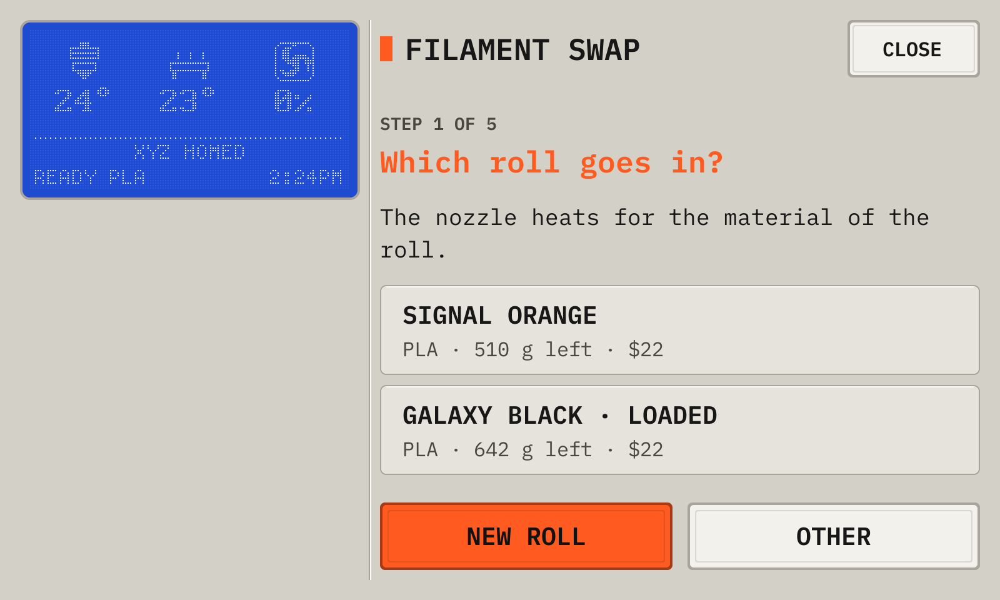
1StepThe step now.
2RollsTap the roll that goes in.
3New rollAdds a roll and weighs it.
4OtherA filament with no roll.
5CloseStops the change and turns off the nozzle.
A new roll
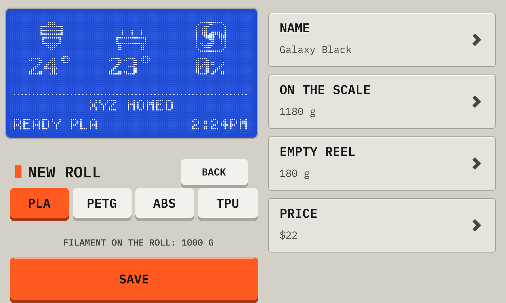
1MaterialThe material of the roll.
2NameFor example the color and the brand.
3On the scaleThe weight of the roll with its reel.
4Empty reelThe weight of an empty reel of the same brand.
5PriceThe roll price, for the cost of each print.
6SaveAdds the roll as the loaded roll.
The rolls
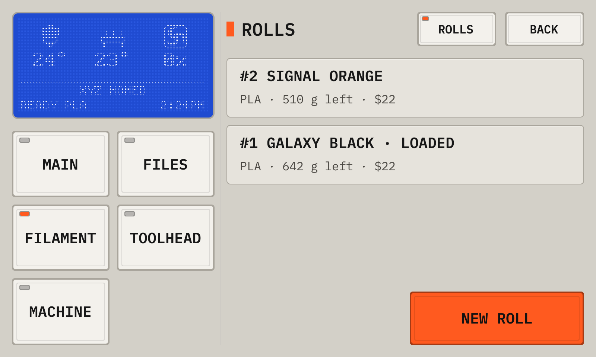
1New rollAdds a roll with no filament change.
One roll
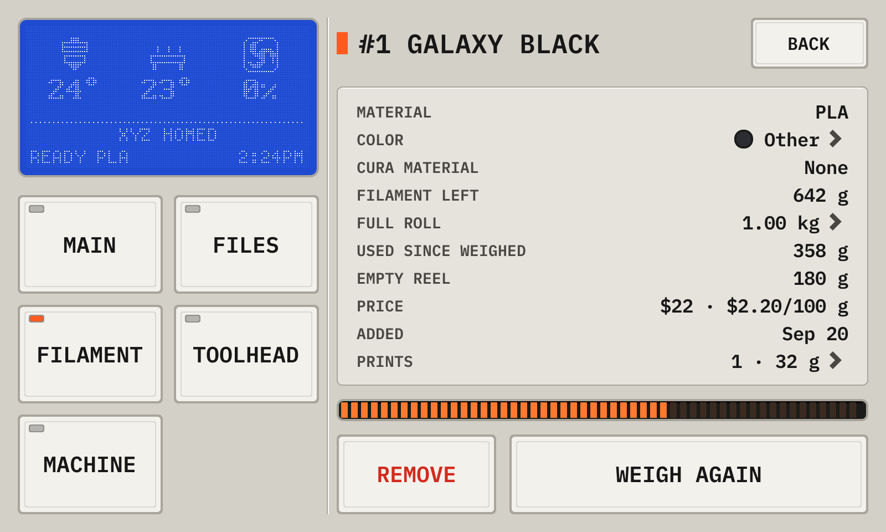
1DetailsThe filament left, the filament used, and the price.
2ColorTap it to choose a color. The print screen and Cura show it.
3Full rollThe filament of a full roll: 1 kg by default. Tap it to change it.
4LeftThe part of a full roll that is left.
5PrintsTap it for the prints that used the roll.
6Weigh againSets the filament from a new weight.
7RemoveRemoves an empty roll from the list.
Each roll has a number, for example #3. For QR code labels, open printdeck.local/rolls/labels and print the sheet on 2 inch round labels (Avery 22807). A phone camera on a label opens the page of the roll. Load there opens the filament change on the deck.
The color of a roll
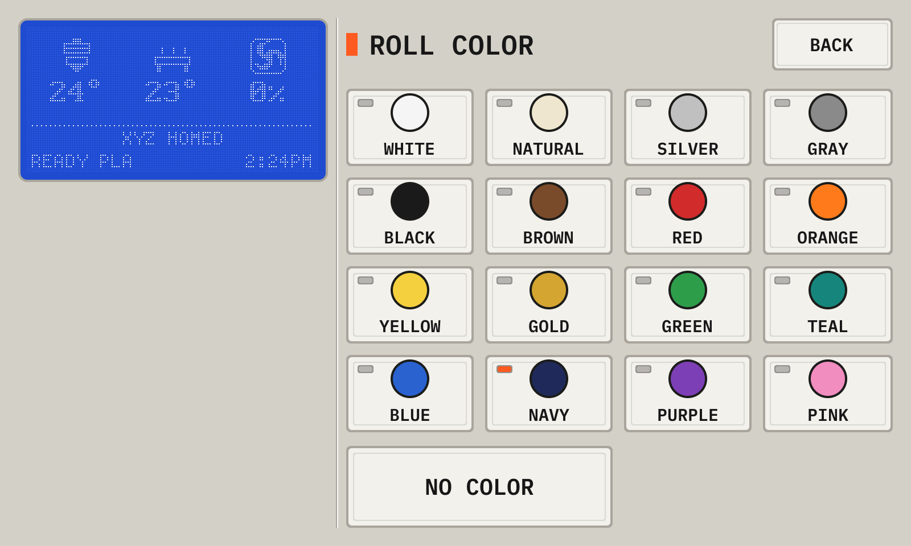
1ColorsTap a color.
2No colorRemoves the color.
Tap a color to set it. The Cura plugin gives the roll material in Cura the same color.
15Move the head and heat
Open Toolhead, and tap Home all after each start of the printer.
Hold the joystick to move the head. Use Z for the height.
Tap a temperature on the idle screen to set it with the keypad.
The Toolhead page
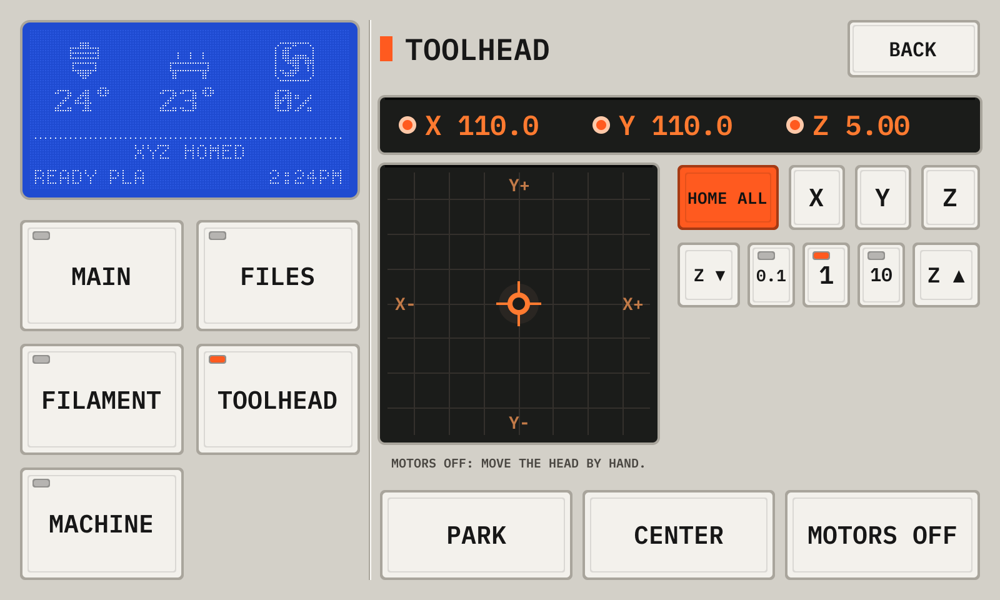
1PositionA lit LED shows a homed axis.
2HomeHome after each start of the printer.
3JoystickHold a finger on the pad to move the head in X and Y.
4ZMoves Z by the step: 0.1, 1 or 10 mm.
5Park, Center, Motors offPark lifts the nozzle 10 mm and moves the head to the back left. Center moves it to the bed center. Motors off frees the head.
The keypad of a temperature
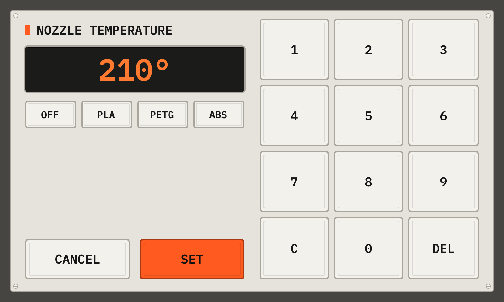
1ValueThe value.
2PresetsOff, and the material temperatures.
3KeysC clears, DEL removes a digit.
4SetSets the heater.
16Level and calibrate
Maintenance lists the calibrations of your printer. Open it from Machine.
Open Machine, then Maintenance.
Tap Bed tilt or Bed mesh to probe the bed. The deck shows the action until it ends.
Tap Probe Z offset for the paper test. Move the nozzle down until a sheet of paper drags a little, then tap Accept.
Tap PID tune after you change a heater or a fan. A PID tune runs for about 10 minutes.
Tap Save config to write the results. Klipper restarts.
Tap Pressure advance test to print the tower. Then tap Pressure advance, and type the height of its sharpest corners.
The Maintenance page
1Bed tiltProbes the bed and corrects its tilt. A printer with a bed mesh shows Bed mesh.
2Probe Z offsetThe paper test for the nozzle height.
3PID tuneHeats the nozzle to 210° and the bed to 60°, and tunes each heater.
4Nozzle changeHeats the nozzle to 250° and raises the head.
5FirmwareWrites the Klipper firmware. Orange text shows old firmware.
6Save configWrites the results into printer.cfg. Klipper restarts. Orange text shows unsaved results.
The Maintenance page, further down
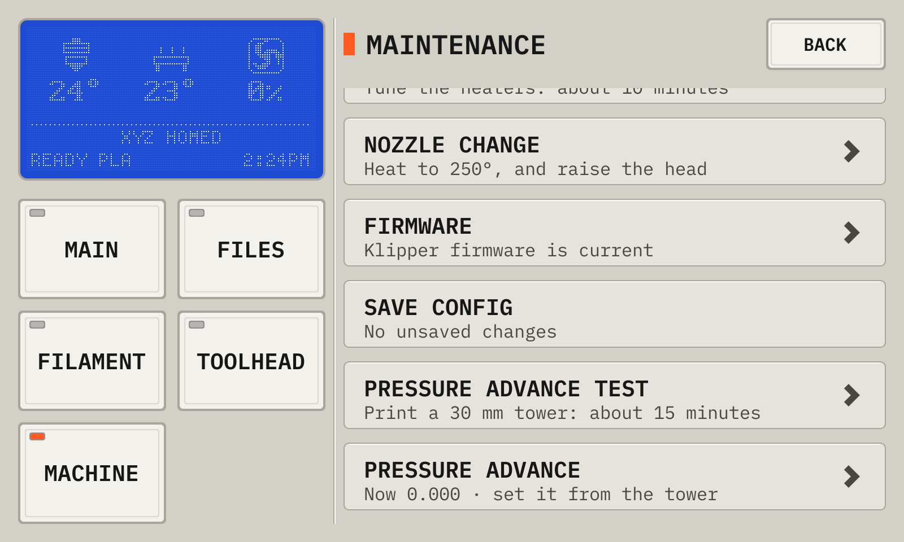
1Pressure advance testPrints a 30 mm tower. The pressure advance goes up 0.005 for each mm. Measure the height of the sharpest corners.
2Pressure advanceType the height of the sharpest corners. The deck writes the value in printer.cfg.
An action runs
1ActionThe time since the start.
2Stop the printerStops the printer at once. Then tap Firmware restart.
The other keys are locked while an action runs. If the action fails, the deck shows the Klipper error until you tap OK.
The paper test
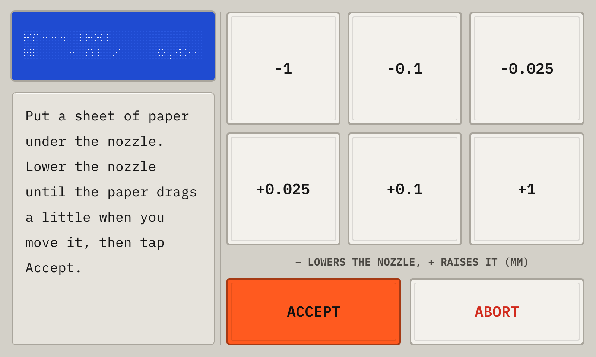
1HeightThe height of the nozzle now.
2StepsMoves the nozzle down (−) or up (+).
3AcceptKeeps the height. Then tap Save config.
4AbortStops the test with no change.
This screen opens by itself for each paper test, also from a macro.
17Calibrate the camera
A calibration lets the camera views and the time lapse crop follow the part.
The deck prints 5 towers and you tap them on a picture. A bed that moves front to back goes to two places, so the deck also gets the depth.
Open Settings, then Camera, then Calibrate.
Tap With a print. Clear the bed, then tap Print. The towers print in the loaded material.
After the print, leave the towers on the bed and tap Go on. The toolhead moves to the left side, and the bed moves.
For each mark, tap the bottom or the top of the tower, then tap Use mark. Tap Skip for a mark that you cannot see.
The bed moves to the front. Tap the top of each tower again.
Check that the green lines are on the towers, then tap Save. Remove the towers.
Calibrate the camera: the two ways
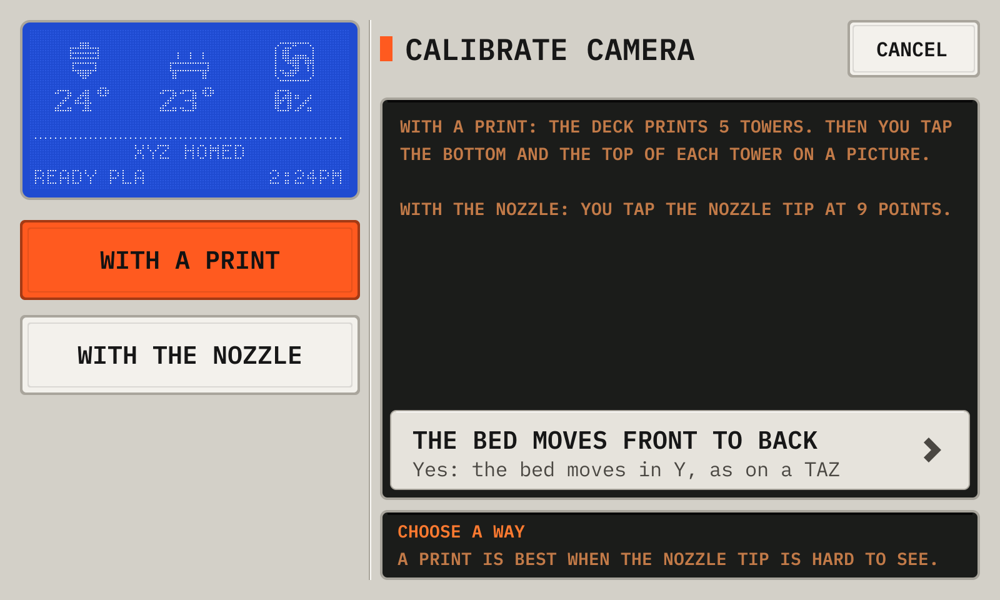
1With a printPrints 5 towers. Use it when the nozzle tip is hard to see.
2With the nozzleThe nozzle goes to 9 points. Tap the tip at each point.
3The bed moves front to backYes for a printer with the bed on Y, such as a TAZ. The default comes from printer.cfg.
Tap a tower
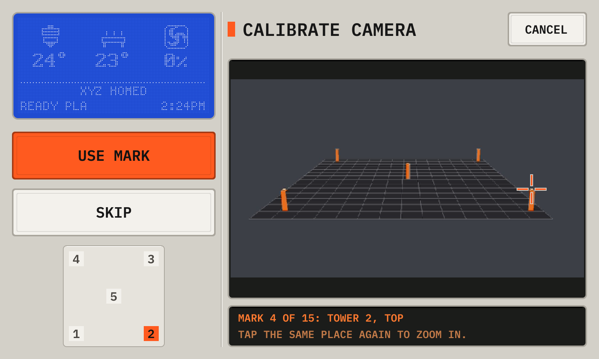
1PictureTap the mark. The first tap zooms in. Tap or drag again to put the mark exactly.
2StepThe tower and the end to tap: the bottom or the top.
3PlanThe towers from the top. The tower now is orange.
4SkipGoes to the next mark, when the picture does not show this one.
The result of the calibration
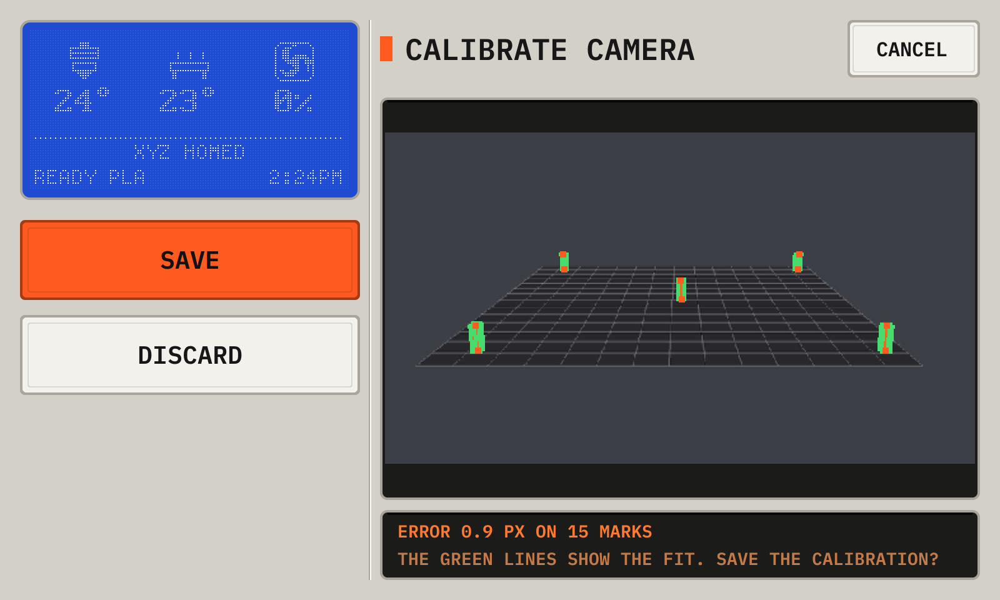
1PictureThe green lines are the towers of the calibration. They must be on the towers.
2SaveKeeps the calibration. Then remove the towers from the bed.
With the nozzle, the nozzle goes to 9 points and you tap the tip. Use it when the camera shows the tip.
Calibrate again after you move the camera or change the size of its picture.
18Look after the printer
Machine has the information of the printer, the history of the prints, the macros, the console and the settings.
The Machine page
1InformationThe versions, the address and the totals.
2MaintenanceThe calibrations and the firmware.
3MacrosTap a macro to run it.
4ConsoleThe G-code console.
5Restart KlipperReads printer.cfg again.
6Firmware restartRestarts the board, for example after a stop.
Drag the list up to see more rows.
The Machine page, further down
1Simulated printerRuns a simulated printer.
2PrintsThe totals and the history of all prints.
The Machine page, at the bottom
1SettingsThe theme, the clock, the screen, the cameras and the messages.
2Software updateShows and installs a new version.
3Wi-Fi and helpThe network, the password and the addresses.
4System monitorGraphs of the CPU, the memory and the SD card.
The Settings page
1ThemeDay, night, or auto.
2Clock12 or 24 hours.
3Home in a filament changeOn: the printer homes while the nozzle heats for a filament change.
4ScreenTap it to turn the screen a quarter turn. The deck restarts, and a print continues. This setting overrides display_rotate.
5CameraOpens the live picture, as the Camera key does.
6CamerasNames the cameras and sets their uses.
The Settings page, at the bottom
1PhonesThe phones that get push messages. Tap a phone in the list to remove it.
2NotificationsPush messages through ntfy. In the ntfy app, subscribe to a topic with a name that is hard to guess. Type the same topic here. An empty topic turns the messages off.
The Camera page
1TabsA tab for each camera that is on. Both shows all the cameras.
2PictureUse it to aim the camera at the bed.
3TurnTurns the picture 180°.
4FocusShows the focus keys. Only a camera with a focus control has this key.
5Camera settingsThe name, on or off, and the uses of this camera.
A camera runs only while somebody looks at it. With no camera, the apps show the deck screen.
If a camera shows too little USB bandwidth, move it to another USB port.
The focus of the camera
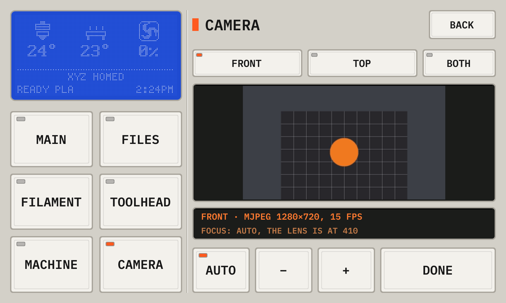
1AutoLit when the camera focuses itself. Tap it to keep the lens where the autofocus put it.
2−Moves the lens one step. The autofocus goes off.
3+Moves the lens one step to the other side.
4DoneShows the other camera keys again.
A fixed focus keeps the picture sharp when the toolhead and the bed move. Set it while the picture shows the nozzle.
The deck keeps the focus of each camera, and sets it each time the camera starts.
The Cameras page
1FrontEach camera, with its uses. Tap a camera to change it.
The settings of one camera
1NameType a name, such as Top.
2OnTurns the camera on or off. Its uses move to another camera.
3AppsCura and the apps show this camera first.
4Time lapseThe camera of the time lapse.
5PicturesThe first layer picture, and the pictures on the phone.
Each use is on one camera. To move a use, check it on the other camera.
Statistics
1TotalsThe prints, the success rate, the time and the filament.
2ResultsDone (amber), cancelled and failed (red).
3DetailsThe filament, the average and longest print, and the recent prints.
4HistoryEach print with its result. Tap a print to see it or print it again.
A print of the history
1ModelThe model of the print.
2DetailsThe result, the time, the filament and the time lapse video.
3StillThe last frame of the time lapse video.
4PlayOpens the player.
5ReprintPrints the file again.
The deck keeps the last 3 videos. The record of an older print shows Removed.
The console
1RepliesYour commands, the replies, and errors in red.
2Type a commandOpens the keyboard.
3Quick keysHome (G28), Status (STATUS) and Help (HELP).
The System monitor
1CPUThe CPU use.
2MemoryThe memory in use.
3WritesThe SD card writes a minute.
41 h10 minutes, 1 hour or 24 hours.
The samples stay in memory. A restart clears them.
19Update the Printdeck
The deck checks for a new version once a day. Machine then shows Software update in orange.
The deck installs only a signed version. If the new system fails to start, the deck goes back to the old one.
Open Machine, then Software update.
Read the notes of the new version, then tap Install. The deck installs only when no print runs.
Wait for the download. The deck restarts into the new version.
Software update
1VersionsThis version and the newest version.
2NotesWhat the new version changes.
3InstallInstalls the new version, after a question. The deck restarts.
4Check nowChecks for a new version now.
5Beta updatesOn: the deck also gets beta versions.
20Back up your data
A backup is one file with your rolls, history, settings, API keys, paired phones and Klipper config. Make a backup before you change the SD card.
Keep the backup password safe. Without it, no one can restore the backup.
The backup excludes the deck password and the Wi-Fi network.
Open http://printdeck.local/system in a browser, and log in with the password of the deck.
Under Backup, type a backup password of 8 characters or more, two times. To add the G-code files, select Include the G-code files.
Click Download the backup. The browser saves a file with the name printdeck-backup-NAME-DATE.pdbk.
To restore, open the same page when no print runs. Under Restore, type the backup password, choose the file, then click Restore.
Klipper and the Printdeck restart. A wrong password or a damaged file changes no data.
21Try the deck with a simulated printer
The simulated printer heats, homes, probes and prints in real time, and no motor moves. Use it to learn the deck or to test a file.
Your printer.cfg stays as printer.cfg.real until you tap Real printer.
Open Machine, then Simulated printer. The setup screen also has this key.
Tap the printer to simulate, then Simulate. Klipper restarts with the simulated printer.
Print as on a real printer: send a file from the slicer, or tap Print a file.
To stop the simulation, open Machine, then Simulated printer, and tap Real printer, then Go back. Klipper restarts with your printer.cfg.
A simulated printer in use
1SimulatedAn orange band shows a simulated printer.
2Real printerPuts your printer.cfg back and restarts Klipper.
3Simulated LulzBot TAZ WorkhorseA probe on four washers, and bed tilt. Here it is in use.
4Simulated LulzBot Mini 2A probe on four washers, and bed tilt.
5Simulated Creality CR-10 V3Endstops on each axis, and no probe.
The deck changes the printer only when no print runs.
22When something goes wrong
When Klipper stops with an error, the deck shows the message.
Read the message. It often names the setting in printer.cfg.
After a stop or a power cut of the printer, tap Firmware restart.
After a change to printer.cfg, tap Restart Klipper.
A Klipper error
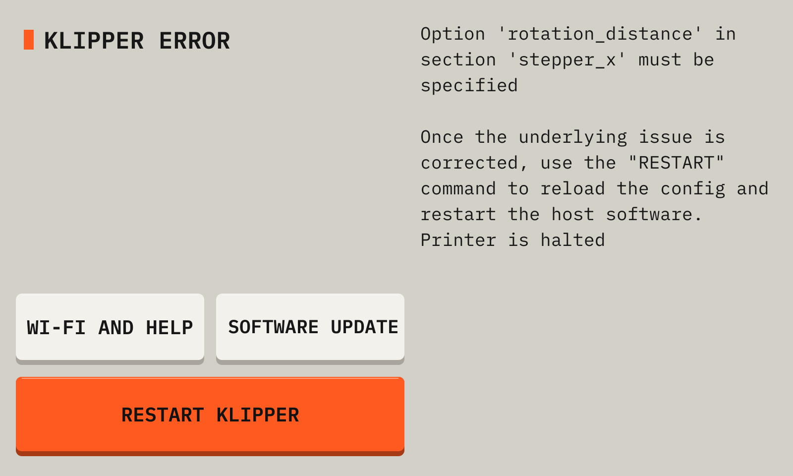
1MessageThe Klipper error.
2Restart KlipperReads printer.cfg again.
3Wi-Fi and helpThe network, the address and the password.
4Software updateInstalls a new version. It can fix the problem.
23Settings
The file printdeck.txt on the PRINTDECK partition holds the settings. Put the SD card in a computer to change it. The deck reads it at each start, and clears the Wi-Fi password in it.
wifi_ssid, wifi_password, wifi_country
The Wi-Fi network
hostname, timezone
The name on the network, and the time zone
display_rotate
The screen turn: 90 or 270 turns a wide display to tall, 0 or 180 keeps the native shape. Empty is 0 for a tall display (the Touch Display 2) and 270 for a wide display
touch_invert_x, touch_invert_y, touch_swap_xy
1 turns an axis of the touch screen
preheat_tool, preheat_bed
The temperatures of Preheat with no filament set
night_from, night_to
The hours of the night colors
printer.cfg (a file)
A Klipper config. The deck imports it at the next start.